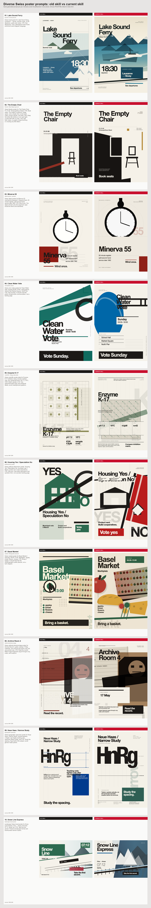

Diverse Swiss poster prompts: old skill vs current skill
Large contact sheet plus full-size linked outputs. Left = old skill from origin/main. Right = current skill.

Lake Sound Ferry
tourism / travel placard
Swiss travel poster for Lake Sound Ferry, Lausanne → Vevey, summer route, 18:30 departure, public pier notice, CTA: See departures. Use a lake/alpine travel mood; avoid tech-event diagram language.
{kind=link}
{kind=link}
The Empty Chair
theatre / Basel figure-ground
Swiss theatre poster for The Empty Chair, Fri 21:00, Schauspielhaus Basel, CTA: Book seats. The subject is absence, stage space, and a single chair; avoid route maps, product panels, and web CTAs. Keep the entire title wholly on one quiet light or dark field with no chair, void, split field, stripe, or graphic shape touching or crossing any title letters.
{kind=link}
{kind=link}
Minerva 55
object poster / product
Swiss object poster for Minerva 55 mechanical stopwatch. Required facts: 55 minute register, split-second hand, service date 1962, CTA: Wind once. The object should carry the argument; type should be direct and restrained.
{kind=link}
{kind=link}
Clean Water Vote
civic/public notice
Swiss civic notice poster for Clean Water Vote, Sunday 09:00–18:00, voting places: School Hall, Market Square, North Pier, CTA: Vote Sunday. It should read like public infrastructure communication, not a landing page.
{kind=link}
{kind=link}
Enzyme K-17
scientific / Geigy-style plate
Swiss scientific poster plate for Enzyme K-17 inhibition study. Include method note, four measured facts: pH 7.2, 18°C, IC50 4.8µM, sample n=42. Use specimen/matrix logic and analytical labels; avoid meetup/event graphics.
{kind=link}
{kind=link}
Housing Yes / Speculation No
political/civic poster
Swiss political referendum poster: Housing Yes / Speculation No, municipal vote 3 March, protect rent, build cooperatives, CTA: Vote yes. Use public persuasion and symbolic form, not a product landing page.
{kind=link}
{kind=link}
Basel Market
market / lithographic placard
Swiss market poster for Basel Market / Saturday, 06:00–13:00, Marktplatz, apples, bread, flowers, cheese, CTA: Bring a basket. It should feel like flat ink/lithographic public placard, not a tech diagram.
{kind=link}
{kind=link}
Archive Room 4
editorial photomontage
Swiss editorial photomontage poster for Archive Room 4, public viewing 17 May, materials: one archival document crop and one portrait crop, CTA: Read the record. Make image fragments argue through crop, scale, and overprint.
{kind=link}
{kind=link}
Neue Haas / Narrow Study
typographic specimen
Swiss typographic specimen poster for Neue Haas / Narrow Study. Include baseline, x-height, cap height, tracking note, specimen letters HnRg, and CTA: Study the spacing. Type itself is the subject; avoid generic SaaS panels.
{kind=link}
{kind=link}
Snow Line Express
landscape travel poster
Landscape Swiss travel poster for Snow Line Express, Chur → Arosa, first train 07:12, winter rail, CTA: Take the first ascent. Preserve landscape format and travel-poster sense of place.
{kind=link}
{kind=link}